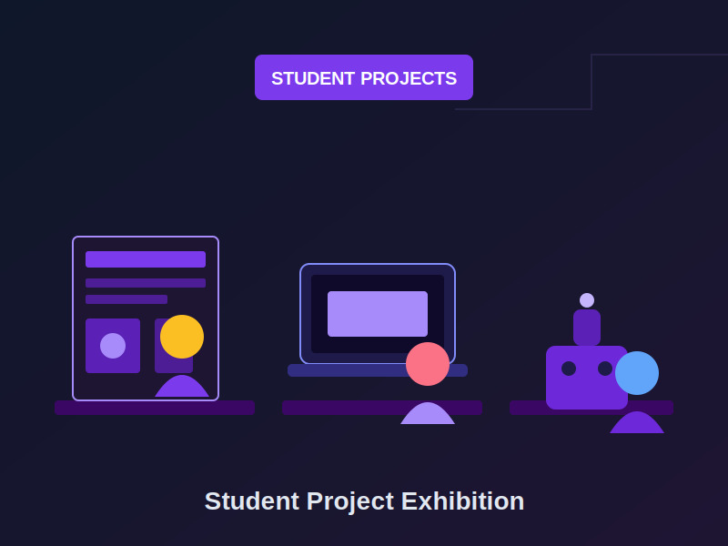
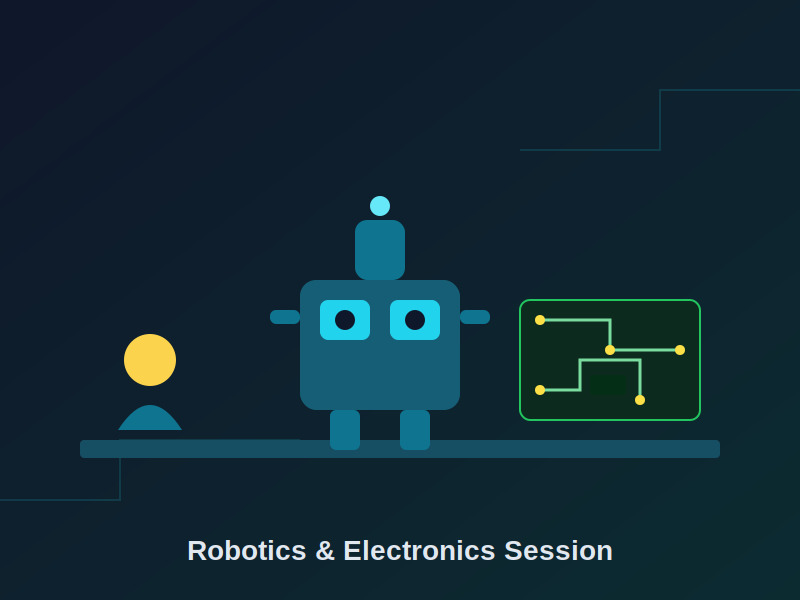
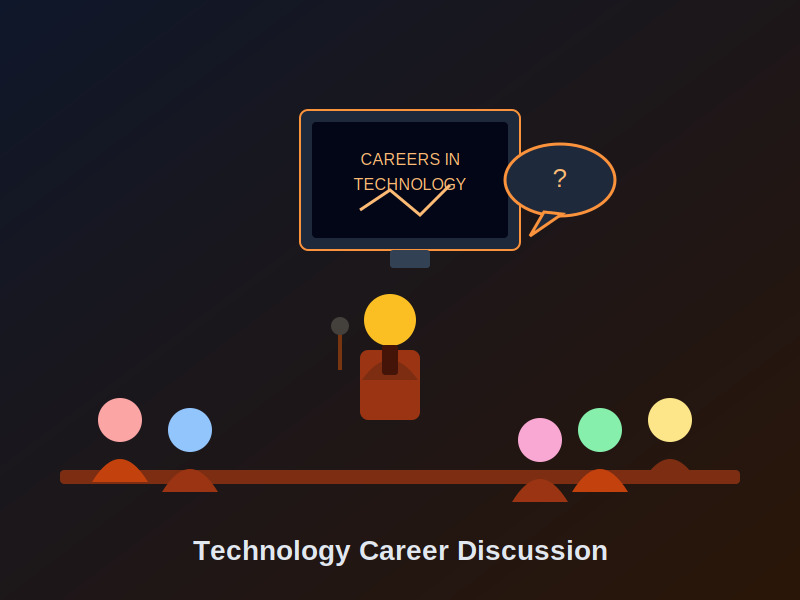

The Technology Workshop is a one-day, hands-on event where students explore
real technology skills — from writing their first lines of code to building
and programming simple robots. It's designed for complete beginners
and curious students alike; no prior programming or electronics
experience is required, just an interest in learning something new.
Any student is welcome to participate, regardless of grade
or experience level. The workshop will be held at
Richmond College Premises on December 5, 2026,
from 09:00 AM to 06:00 PM.
The event is organised by the Richmond College IT Society
to give students a practical, guided introduction to the tech world beyond
the classroom — through coding sessions, robotics demos, project exhibitions,
and career discussions with people already working in the field. Our goal is
to spark curiosity, build confidence, and help students discover where
technology skills could take them.
If you'd like to be part of this experience, simply click the
Enroll Now button above to register for the
Technology Workshop 2026.
This session will be conducted by the teachers of Richmond College IT
Department, guiding students through the fundamentals of programming with a
focus on Python, HTML, and CSS. Participants will get
hands-on practice building simple programs and web pages while learning good
coding habits from experienced instructors.
Every attendee will also receive a specially prepared booklet covering useful
coding tricks and important things to keep in mind while coding, verified and
reviewed by coding experts working in the industry — a valuable resource to
take home and refer back to even after the workshop ends.
Note: Participants who wish to can bring their own laptops
for the session. However, the organizers are not responsible for any loss or
damage to personal devices. If bringing a laptop, please install
Python and
Visual Studio Code
beforehand to save time during the session.
2.Student Project Exhibition

The Student Project Exhibition brings together talented young innovators
from Richmond College as well as
other schools across the Galle area, all showcasing
projects that highlight creativity and technical skill.
All exhibited projects are handpicked through a
competition, with only the
top 25 selected students earning the opportunity to
present their projects to visitors, judges, and fellow students at the
event.
3.Robotics & Electronics Session

The Robotics & Electronics Session is organized by the
Richmond College Robotics Society, giving students a
hands-on introduction to building and programming simple robots and
working with basic electronic components.
The session is conducted with the support of
university students who are old boys of Richmond College, bringing their real-world knowledge and experience back to guide the
next generation of students through practical, guided activities.
4.Technology Career Discussion

This session will be conducted by our honorable chief guest,
Eng. Prof. Shantha Fernando, Head of the
Department of Computer Science & Engineering, University of
Moratuwa. He holds a PhD from TU Delft, an
MPhil from the University of Moratuwa, and a
BSc Engineering (Hons) also from Moratuwa, bringing
decades of academic and industry experience to the discussion.
The discussion will cover
career opportunities in the technology field, guidance
on choosing the right path in IT and engineering, and
insights into emerging trends in the tech industry —
giving students a clearer picture of where a career in tech can take
them.